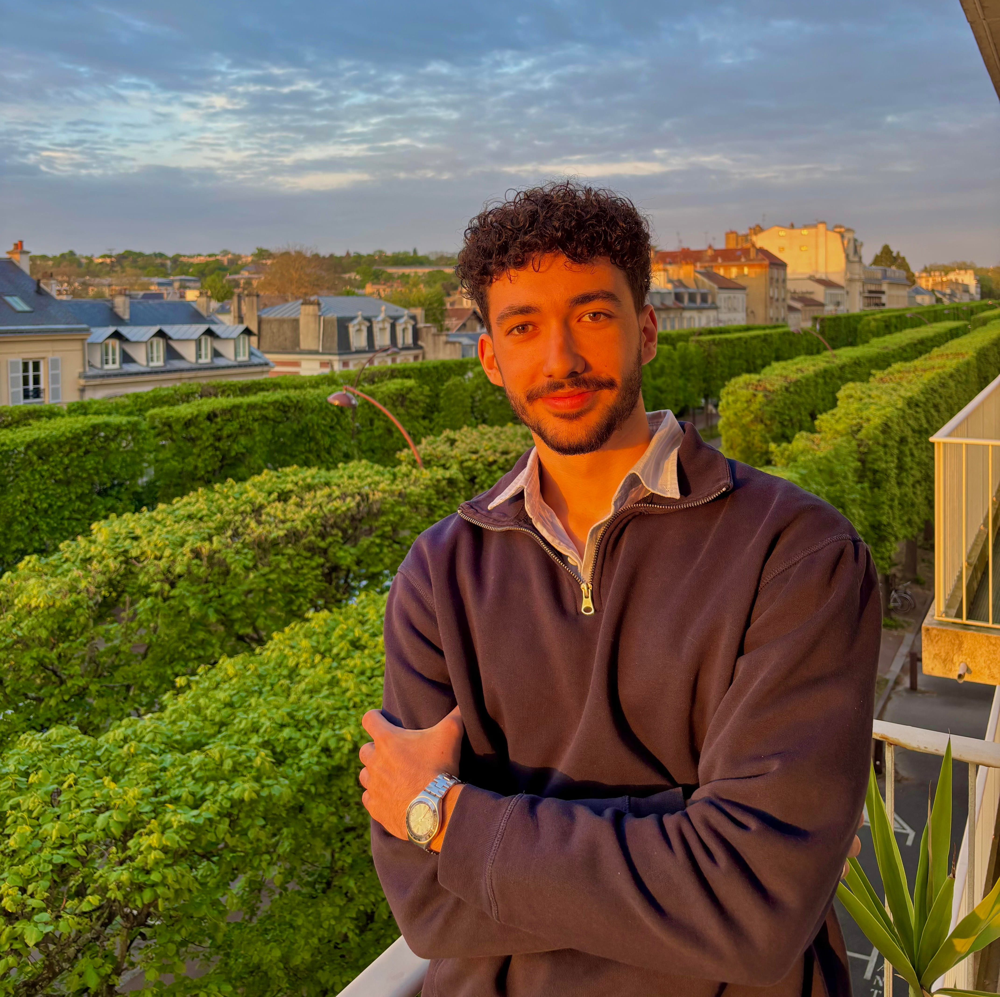

2026 — 2028
Master Informatique - Parcours AI2D
Spécialisation de haut niveau en Apprentissage Automatique, Intelligence Artificielle et Données (AI2D).

Diplômé Mention Très Bien (Top 6/123) de l'Université Paris Cité.
Allier rigueur mathématique, architecture logicielle et intelligence artificielle.
Spécialisation de haut niveau en Apprentissage Automatique, Intelligence Artificielle et Données (AI2D).
Cursus intensif axé sur la théorie mathématique, la conception d'algorithmes et l'architecture fine des systèmes d'exploitation.
Spécialités : Mathématiques (18/20) et Numérique et Sciences Informatiques (19/20).
Développement d'un outil en ligne de commande inspiré de Make. Implémentation d'un parseur TOML, résolution et parcours de graphes de dépendances avec détection fine de cycles récursifs, et optimisation des temps de compilation via un système de cache par hachage cryptographique du contenu des fichiers.
Implémentation complète d'un protocole réseau de messagerie et de notifications. Architecture concurrente robuste gérant les communications TCP/UDP asynchrones, la sécurisation TLS des échanges (via OpenSSL) et un système strict d'authentification asymétrique par signature ED25519.
Conception complète de la base de données relationnelle (MCD/MLD) pour une plateforme communautaire. Création de requêtes SQL analytiques complexes (fonctions de fenêtrage, CTE récursives pour le degré de séparation sociale) et développement d'un algorithme de filtrage collaboratif calculant un indice hybride de recommandation de défis sportifs.
Modélisation complète d'un environnement urbain basé sur la théorie des graphes. Implémentation, optimisation et comparaison d'algorithmes de recherche de chemin complexe (Dijkstra et A*).
Conception d'une architecture réseau multi-joueurs pour un moteur de jeu en temps réel. Conception et intégration d'une intelligence artificielle d'agents autonomes via la création d'heuristiques d'analyse stratégique.
Conception backend/frontend complète d'une solution logicielle d'administration scolaire. Base de données relationnelle sécurisée (SQL) et outil automatisé en Python synchronisé avec l'API Google Calendar.
Conception, développement et commercialisation de sites web sur-mesure pour des entreprises afin d'optimiser leur présence en ligne. Accompagnement technique complet, de l'expression des besoins à la mise en production et au référencement.
Gestion de classe entière et cours particuliers (15h/semaine) en parallèle d'un cursus universitaire intensif. Pilotage complet de l'activité (prospection, création de supports pédagogiques avancés). Voir mon profil Superprof.
Veille active et intérêt approfondi pour les dynamiques macroéconomiques et les mécanismes des marchés financiers. Recherche constante de ponts conceptuels entre les modèles financiers et la puissance algorithmique/architecture logicielle.
Pratique avancée et professionnelle du piano, partagée entre l'interprétation de répertoire et la création originale. Travail rigoureux d'écriture instrumentale, de rédaction de partitions complexes et d'arrangements (projets purement musicaux, sans chant).
Écouter mes morceaux originaux sur les plateformes :